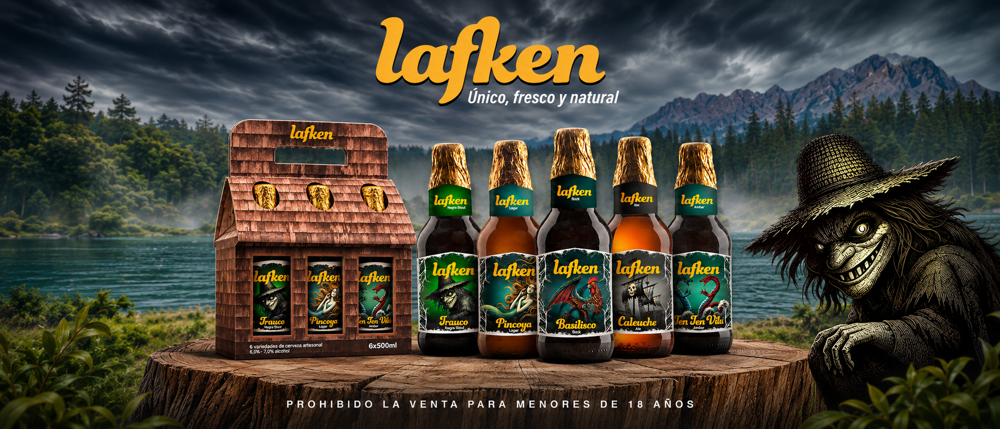
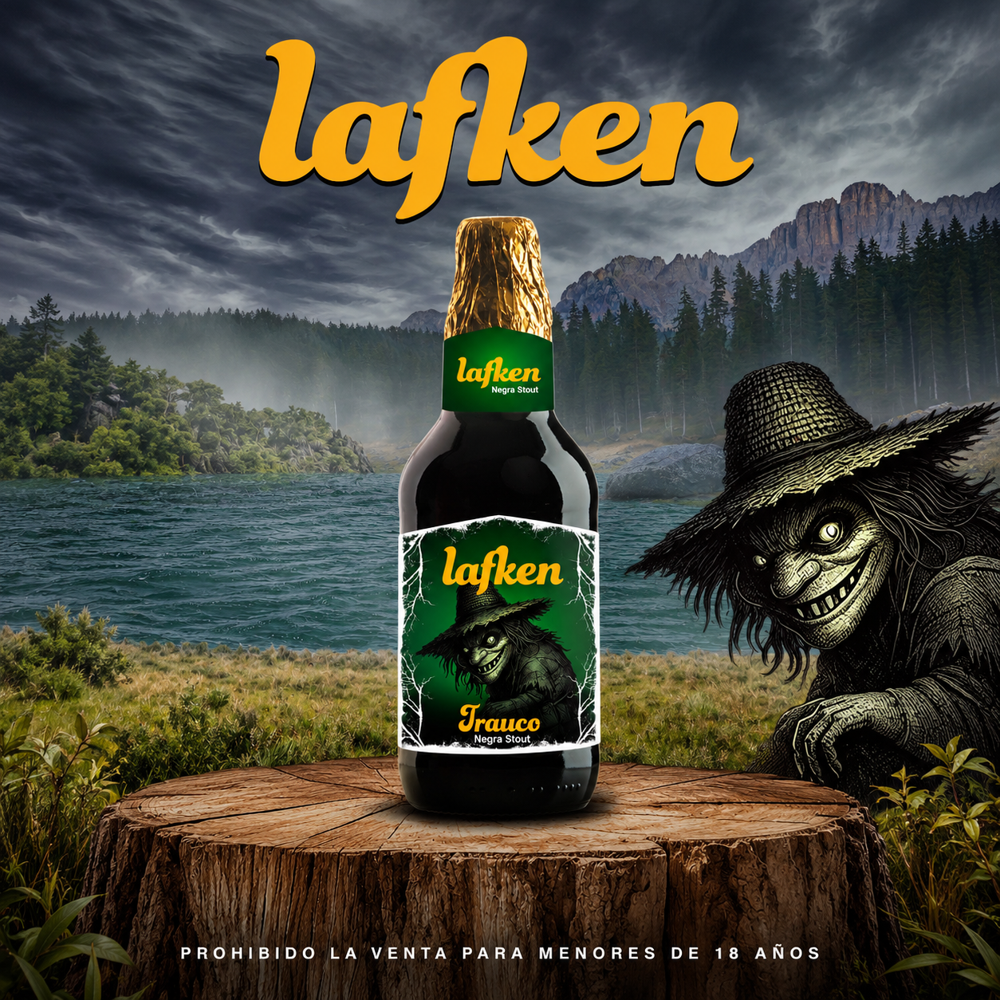
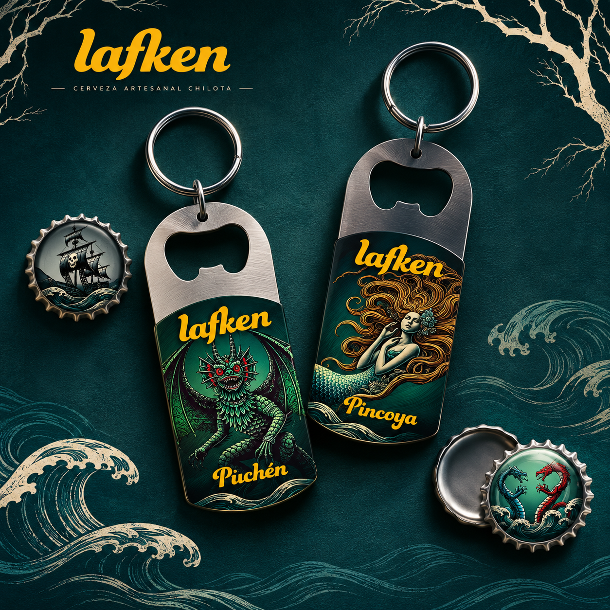
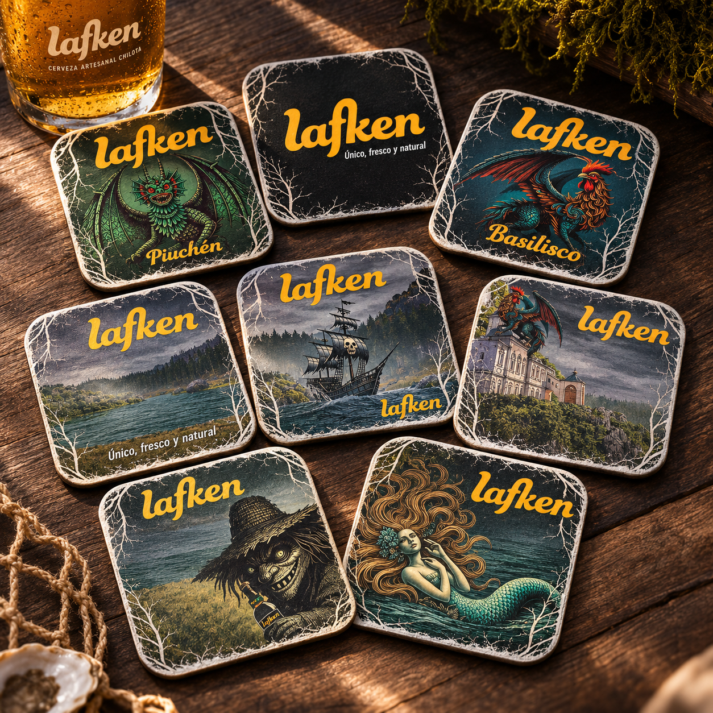
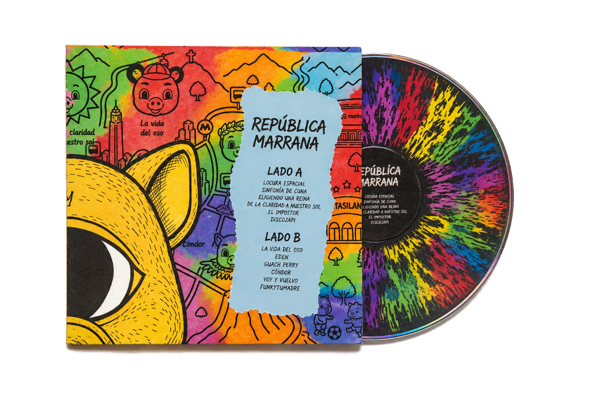

Lafken es una propuesta de packaging para cervezas artesanales que lleva las leyendas chilotas a una colección de envases y etiquetas ilustradas.










← Volver a todos los proyectosLafken es una propuesta de packaging para cervezas artesanales que lleva las leyendas chilotas a una colección de envases y etiquetas ilustradas.





← Volver a todos los proyectos